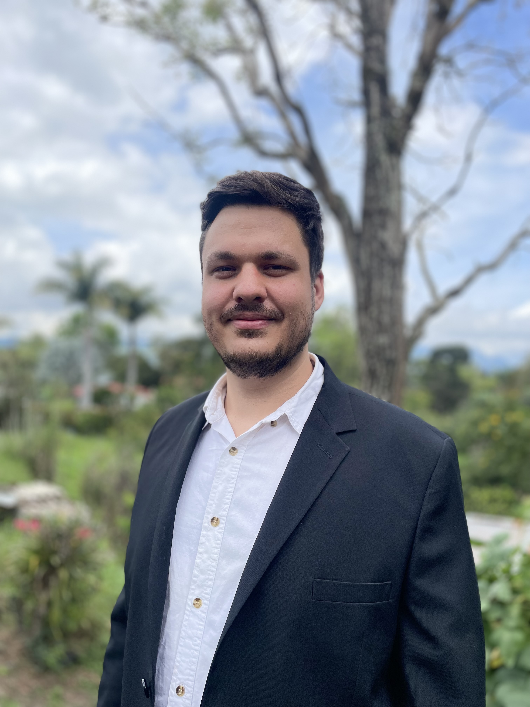

Valentin Barta
Aspiring Full-Stack Web Developer
About me:

Hi, I'm Valentin — an aspiring developer passionate about technology, problem-solving,
and building things on the web. I enjoy learning new technologies, experimenting with ideas,
and continuously improving my skills through projects and real-world practice.
My goal is to create simple, useful solutions and keep growing as a developer.
Read more...
My portfolio:
Click here
My education:
-
FABIZ - Faculty of Business Administration, Bucharest University of Economic Studies
- Relevant coursework: Human Resource Management (recruitment & selection, performance
management, talent development), Organizational Behavior, Marketing & Operations, Accounting &
Finance, Strategic Management. Studied in an international environment with students from 30+
nationalities, developing cross-cultural communication and collaboration skills essential for global
recruitment roles.
- IN PROGRESS! Udemy - The Complete Full-Stack Web Development Bootcamp by Angela Yu
- Full-stack development with HTML, CSS, JavaScript, Node.js, Express
- Front-end frameworks including React and Bootstrap
- Database management with PostgreSQL and SQL
- Version control using Git and GitHub
- API integration and RESTful services
- Development and deployment of responsive web applications
My work experience:
- Selection Specialist | AIESEC in Belgium (Remote)
- Own the Consideration phase for national iGT vacancies in a fully remote, cross-border
team, using CRM tools to track candidates and streamline communication with Account Managers
- Improved candidate sourcing and approvals, increasing the banking talent pool by 25% while
ensuring compliance and a high-quality experience for candidates and partners.
- Conduct structured interviews and assessments to identify top candidates for support roles,
ensuring strong job-fit and cultural alignment.
- Collaborate with cross-functional stakeholders to optimize recruitment workflows and
reduce time-to-hire in a distributed environment.
-
Recruitment Coordinator & Project Manager | HighLevel Management, Bucharest (Hybrid/Remote)
- Oversaw participant acquisition, documentation, and onboarding for study projects,
including KYC verification and contract clarification, ensuring 100% compliance with internal
and external requirements.
- Coordinated communication with international teams and partners via email and online
meetings, resolving issues quickly and maintaining clear expectations.
- Managed study sessions, schedules, and data tracking, using spreadsheets and data
management tools to monitor progress and provide actionable reports to management.
- Executed recruitment strategies to fill key roles, improving participant engagement, show-up
rates, and overall satisfaction.
My top 10 skills:
- Web Developent Fundamentals
- Git & GitHub Basics
- CSS Fundamentals
- HTML Basics
- Problem Solving
- Organizational & Time Management
- Communication & Stakeholder Management
- Talent Sourcing & ATS Tools
- Interview Coordination
- Recruitment & Candidate Screening
Contact me